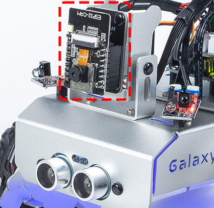
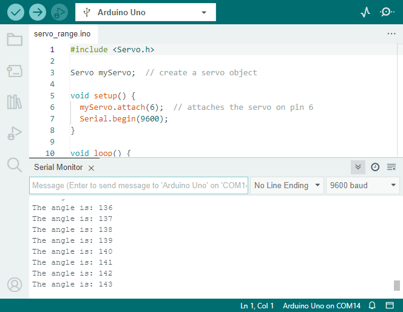

Note
Hello, welcome to the SunFounder Raspberry Pi & Arduino & ESP32 Enthusiasts Community on Facebook! Dive deeper into Raspberry Pi, Arduino, and ESP32 with fellow enthusiasts.
Why Join?
Expert Support: Solve post-sale issues and technical challenges with help from our community and team.
Learn & Share: Exchange tips and tutorials to enhance your skills.
Exclusive Previews: Get early access to new product announcements and sneak peeks.
Special Discounts: Enjoy exclusive discounts on our newest products.
Festive Promotions and Giveaways: Take part in giveaways and holiday promotions.
👉 Ready to explore and create with us? Click [here] and join today!
Lesson 10: Exploring the Mars Rover Visual System - Servo and Tilt Mechanism
Welcome back, young explorers! In today’s adventure, we are going to delve into the fascinating world of the Mars Rover’s visual system. Just like our eyes and neck work together to help us see and navigate our surroundings, our Rover too needs a similar system to navigate the treacherous Martian landscape. And that’s exactly what we are going to build today!
The visual system of our Rover has two main parts: a camera that acts as its “eyes”, and a tilt mechanism that acts like a “neck”, allowing it to look up and down. By the end of this lesson, we’ll give our Rover the ability to “see” and “nod”!
First, we’ll build the tilt mechanism - a device that will hold our Rover’s camera and let it rotate vertically. It’s like giving our Rover a neck, so it can nod its “head” or camera up and down!
Next, we’ll learn about the servo, the tiny yet powerful “muscle” that moves our tilt mechanism. We’ll understand how it works and how we can control it using Arduino programming.
Just as our neck muscles move our head so our eyes can get a better view, the servo will move the tilt mechanism so the Rover’s camera can better survey the Martian landscape.
So, buckle up, explorers, let’s start our mission to equip our Rover with its very own visual system!
Objective
Practice installing and operating the tilt mechanism on the Mars Rover model.
Understand the principles of operation and application of servo.
Learn how to control servo movement through Arduino programming.
Materials
Arduino UNO development board
Servo
Gimbal and camera
Mars Rover model (already equipped with TT motor, suspension system, ultrasonic and infrared obstacle avoidance modules, RGB LED strip)
Arduino IDE
Computer
Steps
Step 1: What is a Servo?
Have you ever watched a puppet show? If you have, you might have marveled at how the puppeteer can make the puppet’s arms, legs, and head move so smoothly, just by pulling on some strings. In a way, servo motors are like our puppeteers.
{kind=link}
Servo motors are special type of motors that don’t just spin around and around like a wheel. Instead, they can move to a specific position and hold that position. Imagine if you’re playing a game of Simon says, and Simon says, “Raise your arm to a 90-degree angle!” You can do it, right? That’s because, like a servo, you can control exactly how much to move your arm.

Brown Line: GND
Orange Line: Signal pin, connect to the PWM pin of main board.
Red wire: VCC
Just like you can control your arms to move to specific positions, we can use servo motors to control the exact position of objects in our projects. In our Mars Rover, we will use a servo to control the up and down movement of our tilt mechanism, just like how you can nod your head up and down.
In the next step, we will go on a fascinating journey inside a servo motor to understand how it works. Excited? Let’s go!
Step 2: How does a Servo Work?
So how does a servo work its magic? Let’s go on an exciting journey inside a servo!
If we were to peek inside a servo, we would see a few parts. At the heart of a servo is a regular motor, very similar to the motors that spin our Mars Rover’s wheels. Wrapped around the motor, there is a big gear that is connected to a smaller gear on the motor shaft. This is how the motor’s fast, circular motion gets transformed into slower but stronger motion.

But that’s not what makes a servo special. The magic happens in a tiny piece of electronics called a “potentiometer” and the “control circuitry”. Here’s how it works: when the servo moves, the potentiometer turns and changes its resistance. The control circuitry measures this change in resistance and knows exactly what position the servo is in. Clever, isn’t it?
To control a servo, we send it a special kind of signal called a “pulse-width modulation” signal or PWM. By changing the width of these pulses, we can control exactly how much the servo moves and hold it in that position.
In the next step, we’ll learn how to control a servo using an Arduino. Ready for some magic spells in the form of code? Let’s go!
Step 3: Controlling a Servo using Arduino
Alright, explorers, now that we know how a servo works, let’s learn how to control it using our magic wand, the Arduino!
Controlling a servo is like giving it directions. Remember the pulse-width modulation (PWM) signals we mentioned earlier? We are going to use those to tell the servo where to move.
Luckily, Arduino makes this task easy for us with a built-in library called Servo. With this library, we can create a Servo object, attach a pin to it (the pin that our servo is connected to), and then use a simple command, write(), to set the angle.
Here’s a snippet of what the code looks like:
#include <Servo.h>
Servo myServo; // create a servo object
void setup() {
myServo.attach(6); // attaches the servo on pin 6
}
void loop() {
myServo.write(90); // tell servo to go to 90 degrees
}
In this code, myServo is our Servo object, attach(6) tells the Arduino that our servo is connected to pin 6, and write(90) tells the servo to move to 90 degrees.
Great job, explorers! You’ve just learned how to control a servo motor with Arduino. You can experiment with different angles too!
Step 4: Assemble the Visual System
You’re now ready to assemble the visual system of our Rover.
Note
When inserting the ESP32 CAM into the Camera Adapter, be aware of its orientation. It should align properly with the ESP32 Adapter.
{kind=link}

Step 5: Understanding the Limits of the Tilt Mechanism
Even though servo is designed to rotate between 0 and 180 degrees, you may notice that it stops responding beyond a certain point (let’s say after 150 degrees). Have you ever wondered why this happens? Let’s explore this mystery together in our next adventure!
Can you imagine a bird trying to bend its neck too much that it hits its own body and can’t move any further? Our Rover’s tilt mechanism faces a similar situation. As the servo moves the mechanism downwards, it can bump into the body of our Rover and can’t go beyond a certain angle.
If we try to force it to move beyond this point by writing an unreachable angle in our code, our little servo birdie can get stuck and even damage itself! We don’t want that to happen, do we? So, let’s understand its movement limitations with a little experiment.
We use a for loop to rotate the servo from 0 to 180 degrees while keeping a note of the angle in the Serial Monitor.
The ESP32-CAM and the Arduino board share the same RX (receive) and TX (transmit) pins. So, before uploading the code, you’ll need to first release the ESP32-CAM by slide this switch to right side to avoid any conflicts or potential issues.
After we upload this code, open the Serial Monitor. If no information appears, press the Reset button on the GalaxyRVR shield to run the code again.
You will see the servo rotate, and the Serial Monitor will display the angle.
{kind=link}

On my Rover, the tilt mechanism could go up to around 135° before it hit the body of the Rover and couldn’t go any further.
So, explorers, always remember to respect the limits of your rover to keep it safe and functioning!
Step 6: Sharing and Reflection
Well done, explorers! Today, you’ve not only built a tilt mechanism for your Rover but also understood how to control a servo to move it around. That’s a big step forward in our Mars Rover mission.
Now, let’s share our experiences and reflect on what we’ve learned.
Did you encounter any challenges while setting up the tilt mechanism or programming the servo? How did you overcome them?
Remember, every challenge we overcome makes us smarter and our Rover better. So don’t hesitate to share your stories, ideas, and solutions. You never know, your innovative solution might help a fellow explorer in their journey!